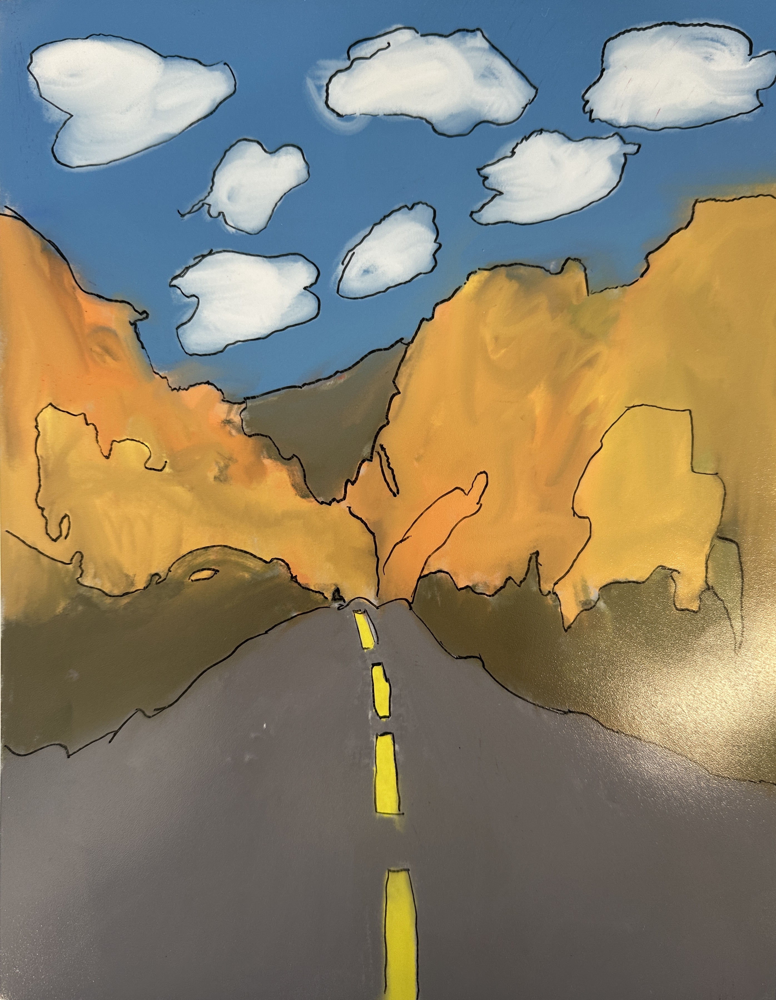
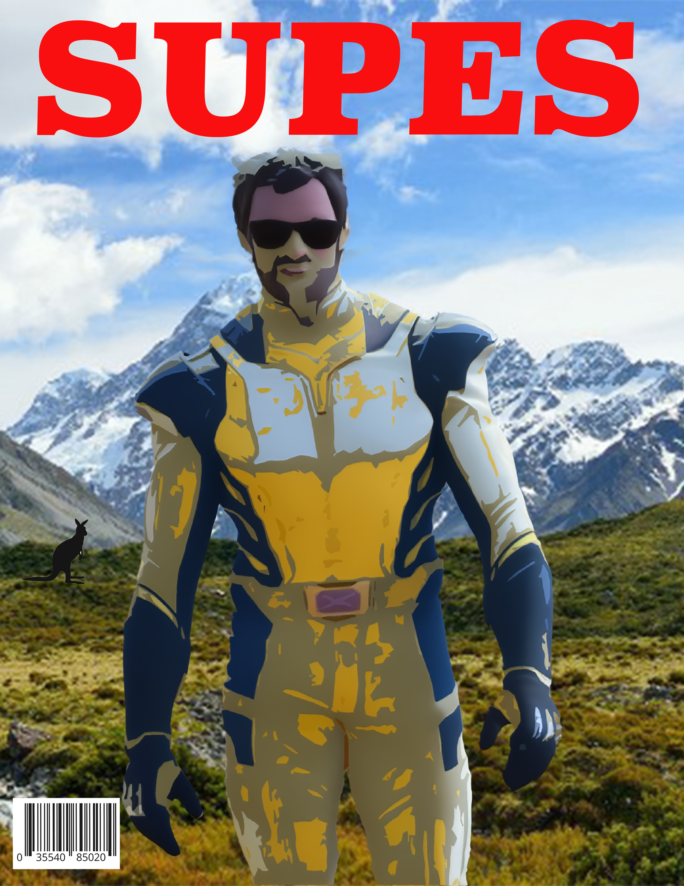
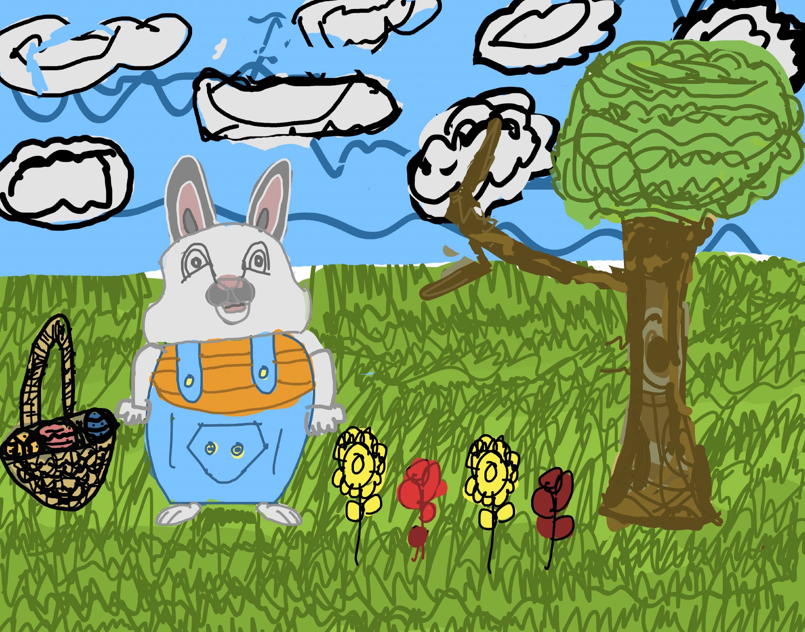
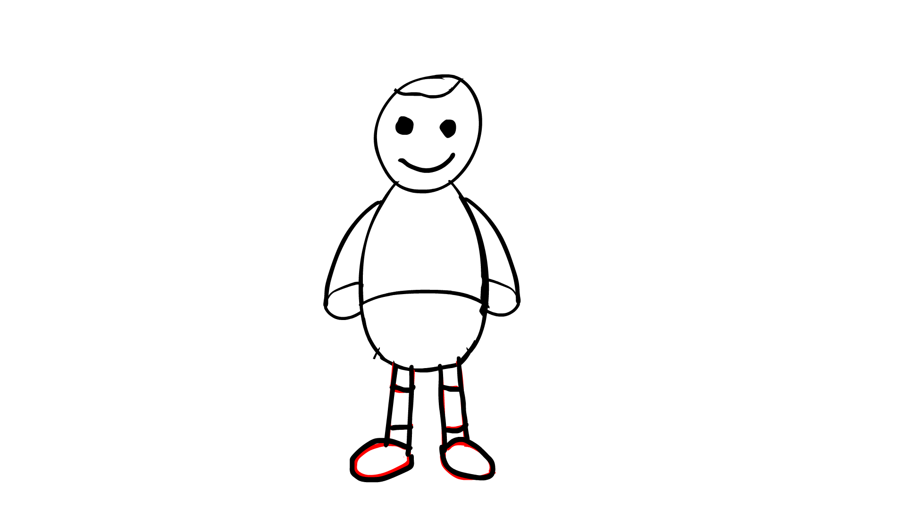
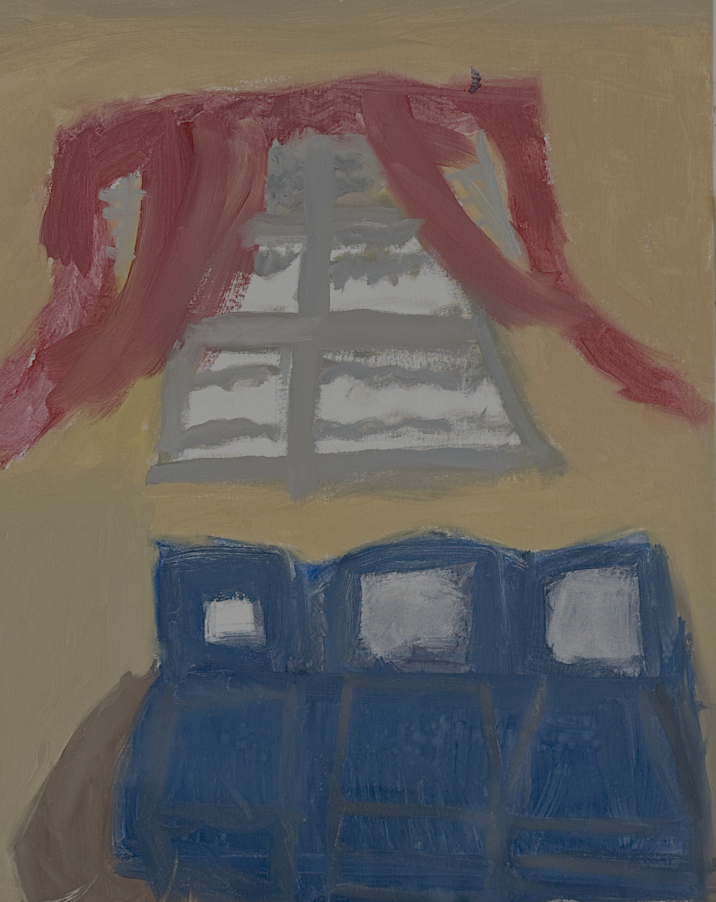
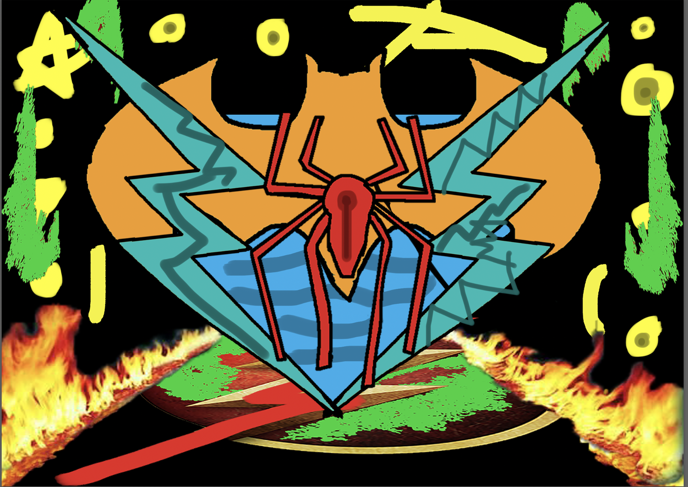
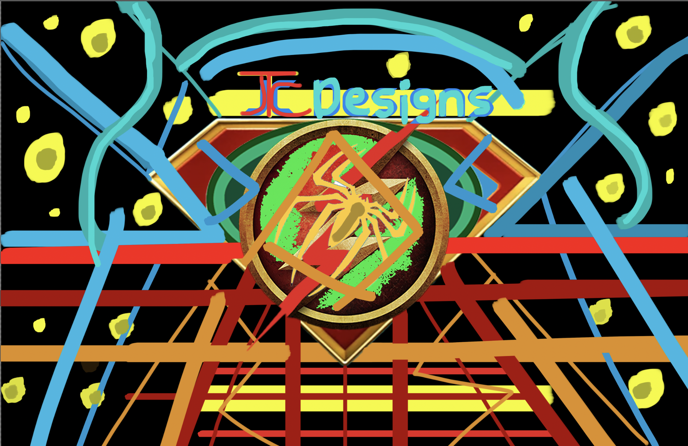
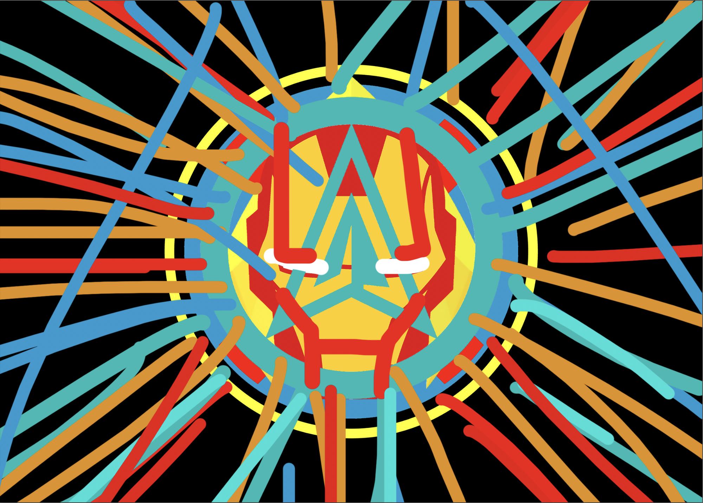
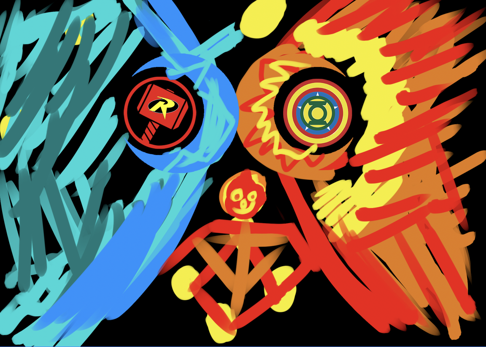

Digital paintings
Sketchbooks, screens & everything in between
A growing collection of work made in and out of the classroom. Pick a medium to wander through.
Browse by medium

Digital paintings

Graphic design

Digital illustration

Digital animation

Basic painting

Senior thesis
Character artwork from my senior thesis.

Senior thesis
An illustrated identity built around the thesis character.

Senior thesis
A bold graphic study of the project’s colors and symbols.

Senior thesis
Character and symbol explorations from the thesis.